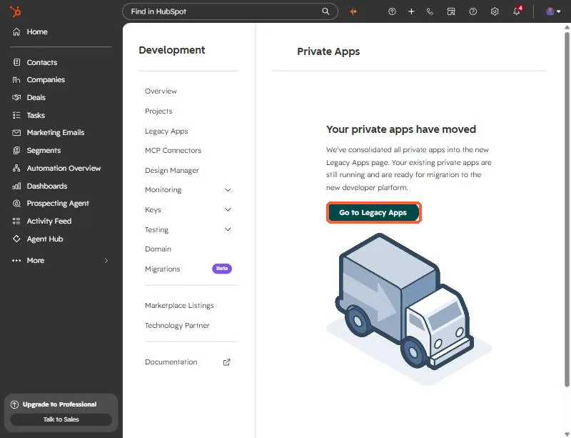
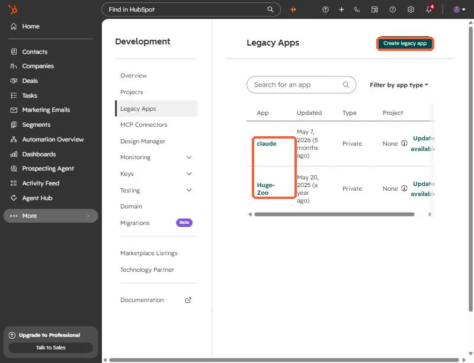

Short answer
HubSQL is a read-only HTTP API for running SQL-style queries against HubSpot data. It is not a database, so you cannot link another SQL server to it directly. You can feed other systems with a sync script, within beta rate limits. If you get 403 MISSING_SCOPES, the app behind your token needs more read scopes. That is what happened to me, and after I added them the same query returned 200.
1. What HubSQL is
HubSpot describes HubSQL as a data access layer for running standard SQL, with joins, filters, and aggregations, against your CRM data. It entered private beta in September 2026 and access is by invitation. HubSpot had not published full public documentation when I wrote this, so check the docs HubSpot gave your account and treat everything below as my testing on one portal.
2. What it is not
When asked whether it could integrate with other SQL servers, my answer was no, not directly. It is an HTTP API that returns query results. It is not a database you can point another server at. To get HubSpot data into another system, write a sync script that runs the query and loads the results, and keep it inside the beta rate limits. In my test it was also read-only.
3. The 403 MISSING_SCOPES fix
My first query to a portal that had the beta turned on returned 403 MISSING_SCOPES. Beta access was fine. The token's app simply did not have the read scopes the query needed. After I added them to the app, the same deal-by-stage query returned HTTP 200 with about 1,700 deals across 22 stages.
HubSpot has moved private apps into the Legacy Apps page, so look for your app there.




Never paste a token into a chat, a screenshot, or a repo. If one is exposed, rotate it in the app settings.
You can open Private apps to get there from your own portal. You need developer access to the account.